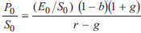
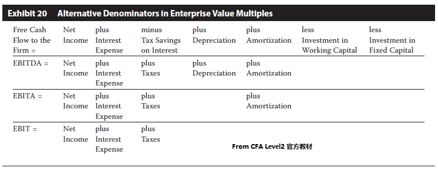

--------------------
Price Multiples
--------------------
- P/E
- P/E代表企业每一元赚钱能力可以卖出多少钱的价格, 反过来也是投资人每单位股份的回收期
- tailing P/E = 当前价格 / 最后一年的EPS
- basic EPS
- diluted EPS
- nonrecurring items 需要调整去掉, 只关注underlying earnings
- business cycle 调整
- normalized EPS = 最近一个全周期的平均EPS = 最近一个全周期的平均ROE × 当前企业book value per share
- 会计方法调整, 比如LIFO - FIFO
- 当EPS太小会导致P/E过大失真, 可以用inverse price ratio
- forward P/E = 当前价格 / 未来一年的EPS估计
- justified P/E
- 一家公司有高于平均的g估计时, 有高于benchmark的P/E就合理
- 一家公司有高于平均的risk时, 有低于benchmark的P/E就合理
- PEG, P/E-to-g
- justified price = 从自身历史均值或中值 P/E × 最近EPS
- 市净率 P/BV
- BV per share = 普通股equity / 普通股数
其中普通股Equity = 总Equity - 高于普通股的部分
- P0/B0 = (ROE-g)/(r-g) = 1 + PV of 未来留存收益期望/B0
- 留存收益 residual earnings = (ROE- rr) × B0
- 市销率 P/S

- PM profit margin 上升, P/S上升
- g上升, justified P/S 上升
- 市现率 P/CF
- 股息收益 devidend yield D/P
- trailing, D0/P0 = (r-g) / (1+g)
- forward, D1/P0 = r-g
--------------------
Enterprise value multiples
--------------------
- EV/EBITDA
- EV = 普通股MV + 优先股MV + 负债MV - Cash & Investments
- 
- EV/S
--------------------
动量指标
--------------------
- 超额预期收益 unexpected earnings, or earnings surprise
- standardized unexpected earnings, SUE
--------------------
调和平均
--------------------
--------------------
Next Chaptor